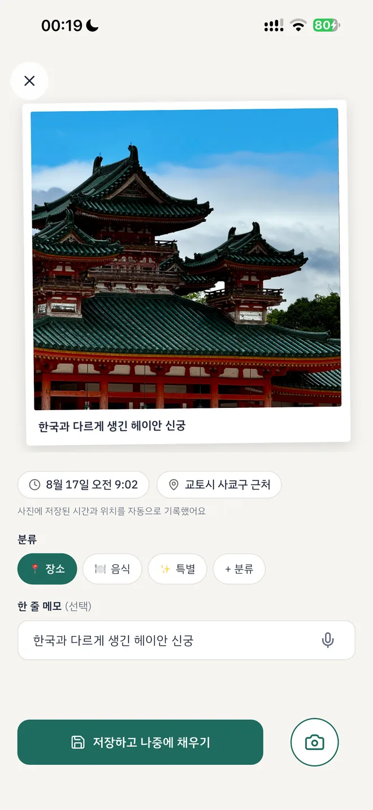
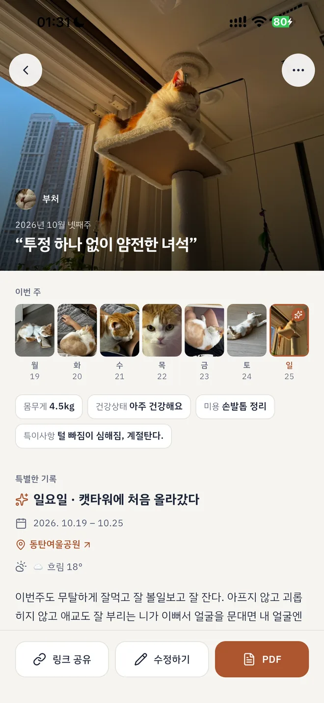
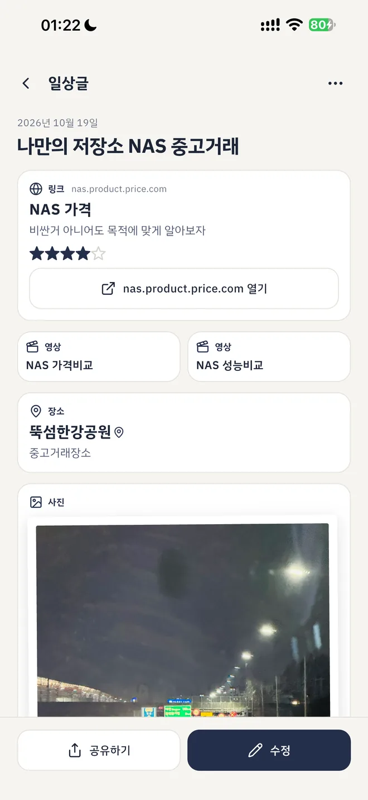
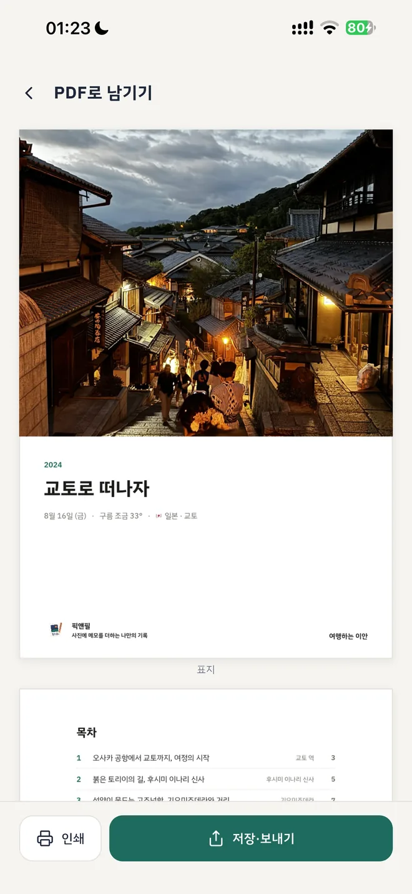

01 · すばやく簡単にメモ一言で十分。
一言で十分。
自分にはわかるから。
撮ってすぐメモしてもいいし、ひとまずスルーしても大丈夫。記録のペースはあなたが決めます。
02 · 写真を記録に写真を撮った理由は
写真を撮った理由は
写真の中にないから。
写真を集めて自分だけの旅行を作れます。旅行が集まれば旅程になります。
03 · うちの子もう一度見たいのは
もう一度見たいのは
特別な日だけじゃないから。
うちの子と過ごす瞬間と自分の気持ちを、1週間に1枚でまとめます。毎日書くのは大変ですから。
04 · 何気ない日常メモが必要なとき、
メモが必要なとき、
ちょっとだけお邪魔します。
大げさなことはいりません。写真にメモがほしいときに書くだけ。それでも便利な機能はそろっています。
05 · 残すオフラインの記録集。
オフラインの記録集。
保管はアナログがいい。
心をこめて作った自分だけの記録をA4 PDFで受け取れます。もちろんリンクでシェアもできます。



